- Kalaripayattu (Oldest Martial Art in India)
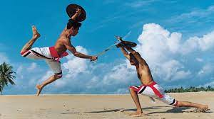
Originated: In the state of Kerala in 4th century A.D.
Techniques and Aspects of Kalaripayattu: Uzhichil or the massage with Gingli oil, Otta, Maipayattu or body exercises, Puliyankam or sword fight, Verumkai or bare-handed fight etc.
About it:- Kalari is a Malayalam word which means School/gymnasium/training hall where Martial arts are practiced or taught.
- Kalaripayattu was introduced as martial art by a legend, sage Parasurama, who built temples.
- This art is used as a means of unarmed self-defence and a way to achieve physical fitness today. Also used in traditional rituals and ceremonies.
- It includes mock duels (armed and unarmed combat) and physical exercises, important aspect is the style of fighting and is nor accompanied by any drumming or song.
- Its important key is footwork which includes kicks, strikes and weapon based practice.
- Its popularity also increases with the movie Ashoka and the Myth.
- Women also practiced this art, Unniyarcha; a legendary heroine won many battles using this martial art.
- Silambam (is a kind of Staff Fencing)
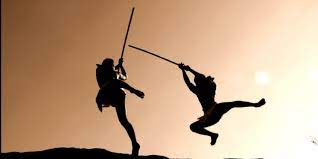
Originated: In Tamil Nadu, a modern and scientific martial art.
Techniques of Silambam: Swift movements of the foot, use of thrust, cut, chop, sweep to achieve mastery & development of force, momentum & precision at different levels of the body, snake hits, monkey hits, hawk hits etc.
About it:
- Silambam is promoted in Tamil Nadu by the rulers Pandya, Chola and Chera and the reference to the sale of Silambam staves, pearls, swords and armours can be seen in a Tamil literature ‘Silapaddigaram’.
- This art also travelled to Malaysia, where it is a famous sport apart from a self defence technique.
- For mock fighting and self-defence the long-staff technique is used. Infact, Lord Muruga (in Tamil Mythology) and sage Agasthya are credited with the creation of Silambam. Even during Vedic age, training was imparted to young men as a ritual and for an emergency.
- Thang-ta and Sarit Sarak
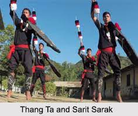
Originated: This art was created by the Meitei people of Manipur.
About it:- Thang refers to a ‘sword’ while Ta refers to a ‘spear’ and is an armed martial art whereas Sarit Sarak is an unarmed art form that uses hand to hand combat.
- In 17th century this art was used by Manipuri kings against Britishers later on when Britishers captured the area this technique was banned.
- Thang-Ta is also known as HuyenLallong, which is a popular ancient martial art which uses other weapons including an axe and a shield.
- It is practiced in 3 different ways: Firstly, ritualistic in nature linked with tantric practices, secondly, mesmerising performance of sword and sword dances and thirdly, is the actual technique of fighting.
- Thoda
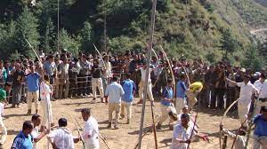
Originated:Himachal Pradesh
Technique: Wooden bows, arrows are used.
About it:
- Thoda name is derived from the round wooden piece attached to the head of an arrow to minimise its lethal potential.
- It is a mixture of martial art, sport and culture.
- It takes place during Baisakhi every year.
- This martial art relies on a player’s of skill of archery and can be dated back at the time of Mahabharata where bows and arrows were used in the valleys of Kullu and Manali.
- In the game, there are 2 groups of 500 people each. All of them are not archers but dancers also who came with them to boost the morale of their respective teams.
- The two teams are called Pashis and Saathis, who believed to be the descendants of Pandavas and Kauravas of Mahabharata.
- Gatka
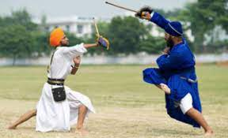
Originated:Punjab
About it:- Gatka is a weapon based martial art form performed by Sikhs of Punjab.
- Gatka means whose freedom belongs to grace. Others say that ‘Gatka’ comes from a Sanskrit word ‘Gadha’ means mace.
- This art uses weapons like Kirpan, Talwar and Kataar.
- It is displayed in various occasions, celebrations in the state including fairs.
- Lathi Khel
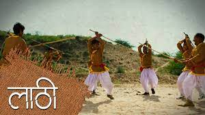
Originated:Majorly practiced in Punjab and Bengal.
About it:- Lathi is one of the oldest weapon used in martial arts.
- Lathi refers to a ‘stick’ mainly cane sticks which is generally 6 to 8 feet in length and sometimes metal tipped.
- It is also a common sport in various villages of the country.
- Inbuan Wrestling
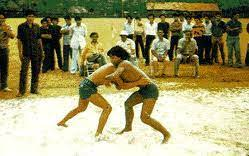
Originated: Mizoram, beleived to have its genesis in 1750 A.D. in Duntland village.
About it:- This art consists of very strict rules that prohobit stepping out the circle, kicking and knee bending.
- It also involves catching of the belt worn around their waist by the wrestlers.
- When people migrated from Burma to Lushai hills then this art form was regarded as a sport.
- Kuttu Varisai
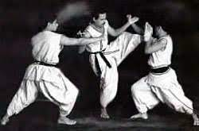
Originated: Mainly practiced in South India and also popular in north-eastern part of Sri Lanka and Malaysia.
Techniques:Grappling, strikinand locking techniques are used in this art.
About it:- This art was forst mentioned in Sangam literature in the first or second century B.C.
- Kuttu Varisai means ‘empty hand combat’.
- It is an unarmed Dravidian martial art used to advance athleticism and footwork through yoga, gymanstics, breathing exercises etc.
- It also uses animal based sets including snake, eagle, tiger, elephant and monkey
- Musti Yuddha
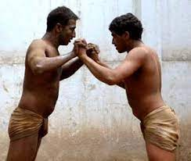
Originated: Varanasi
Techniques: Kicks, punches, knee and elbow strikes are the techniques used by this martial art.
About it:- It is an unarmed martial art form.
- Since 1960 it is a popular art.
- It incorporates the development of all three aspects physical, mental and spiritual.
- The fights in this art are named on the Hindu God and divided into four categories. The first is known as Jambuvanti that refers to the forcing the opponent into submission through locking and holding. Second is Hanumanti, which is for technical superiority. Third refers to Bhimaseni, which focusses on sheer strength and fourth is called Jarasandhi that concentrates on limb and joint breaking.
- Pari-Khanda
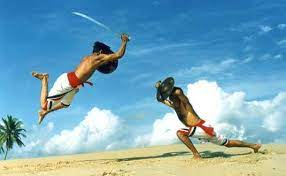
Originated:Bihar, created by Rajputs.
About it:- ‘Pari’ means shield while ‘khanda’ refers to sword. Therefore, both shield and sword are used in this art.
- It involves fighting using Sword and Shield.
- Its steps and techniques are used in Chhau dance of Bihar.
| 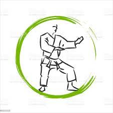 |
Indian Martial Arts |
The evolution of the martial arts has been described by historians in the context of countless historical battles. Dhanurveda, a section found in the Vedas contains references to martial arts. Around the 3rd century BC, the Yoga Sutras of Patanjali taught how to meditate single-mindedly on points located inside one's body, which was later used in martial arts, while various mudra finger movements were taught in Yogacara Buddhism. These elements of yoga, as well as finger movements in the nata dances, were later incorporated into various martial arts. Indian martial arts were an important influence in the development of a number of modern Asian martial arts, particularly within the Indian cultural sphere (countries outside India influenced by Indian culture and religion) of Southeast Asia. Examples include Indo-Malay silat, Burmese banshay, naban and bando,Filipino escrima and kali, Thai krabi krabong and Cambodian bokator. Indian martial arts also lightly influenced the various forms of Indochinese kickboxing, namely Muay Thai from Thailand, Muay Lao from Laos, Tomoi from Malaysia, Pradal Serey from Cambodia and Lethwei from Myanmar.